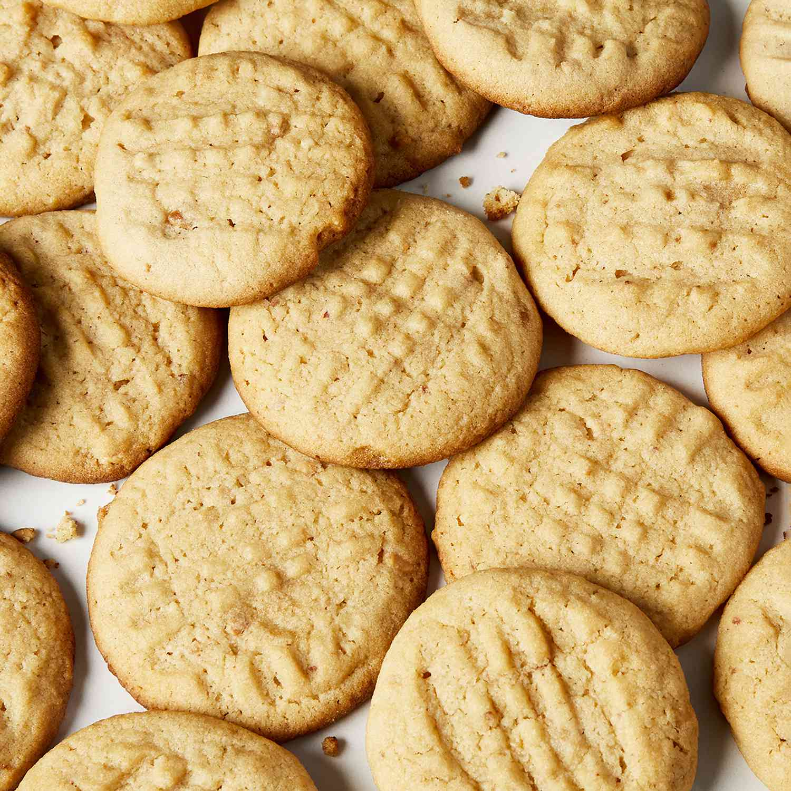

Peanut Butter Cookies

These peanut butter cookies are deliciously soft and chewy in the middle. They taste great and are easy to make!
Ingredients
- Butter: This peanut butter cookies recipe starts with two stick of unsalted butter.
- Peanut butter: This recipe calls for crunchy peanut butter, but you can use smooth if you'd prefer.
- Sugars: A blend of white and brown sugars creates the perfect sweet, warm flavor.
- Eggs: Two eggs lend moisture and act as a binder, which means they help hold the dough together.
- Leaveners: Baking soda and baking powder act as leaveners, which means they help the cookies rise.
- Salt: A pinch of salt enhances the flavors of the other ingredients, but it won't make the cookies taste salty.
Steps
- Make the dough: Beat the butter, peanut butter, and sugars together. Beat in the eggs. Sift the dry ingredients together, then add to the wet mixture.
- Roll into balls: Chill the dough to make it easier to work with. Roll the dough into balls, place on a baking sheet, flatten with a fork, and make a criss cross pattern.
- Bake the cookies: Bake the cookies until golden, then cool on a wire rack.